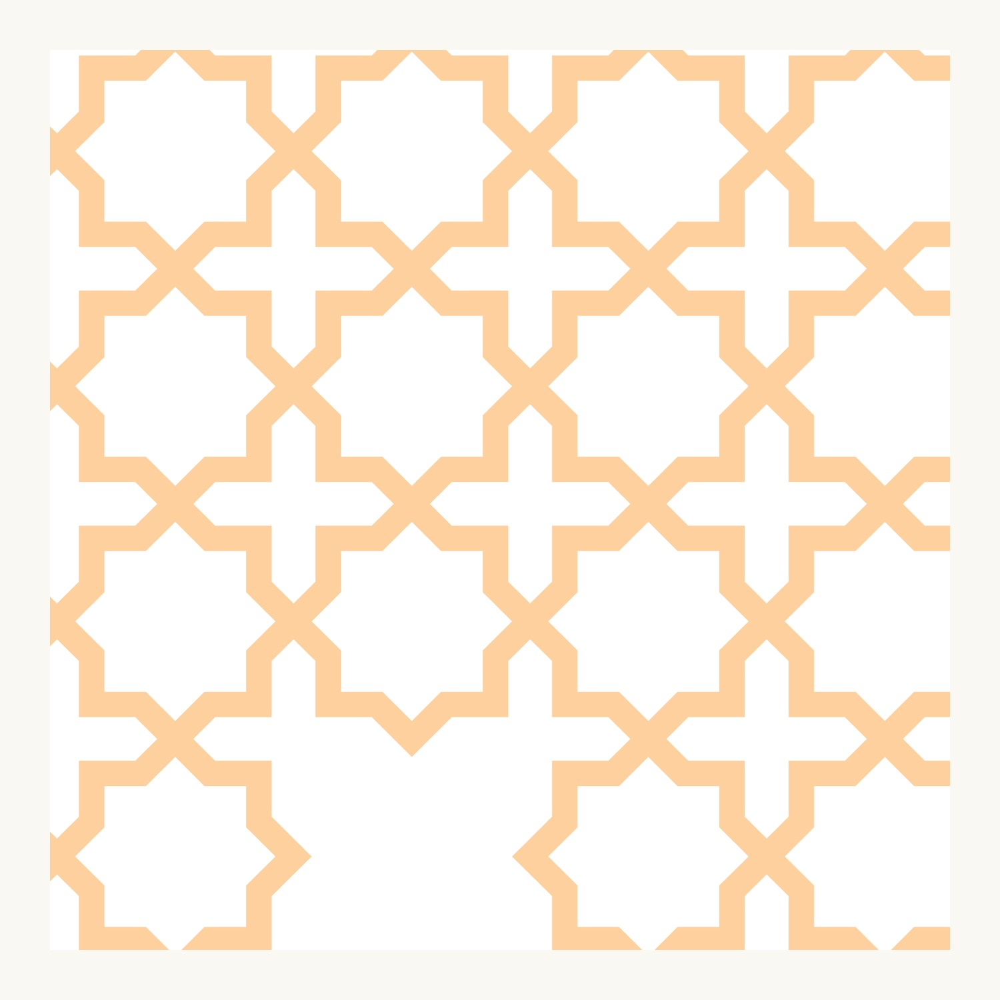
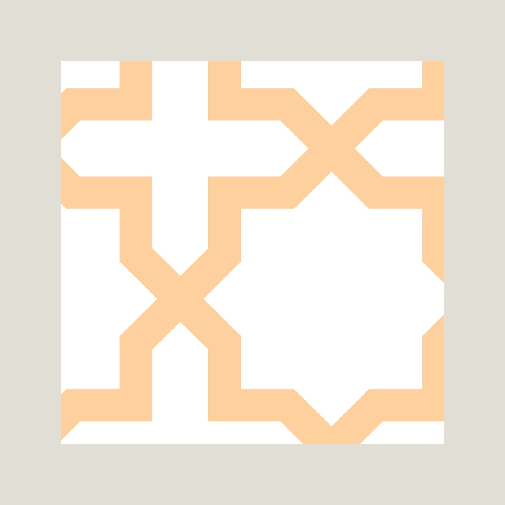
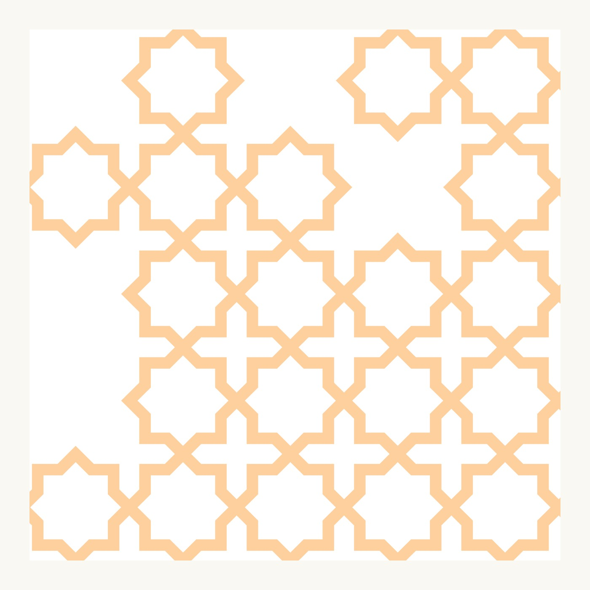

05Related Work
A custom jali — a pierced ornamental screen — for the members' club at DLF Purseni. An eight-point star locks with a cross into a continuous lattice, drawn once as clean, scalable vector so it could be cut at any size across the club's partitions and façade screens and still read as one pattern.

A jali is an old idea — a perforated screen that filters light and air while it decorates. The brief here was a single ornamental language the club could use everywhere: room partitions, balustrades, façade panels. So the work was less a logo than a system — one tile that could repeat forever.
An eight-point star tessellates with a slim cross to fill the plane with no seams and no leftover space, giving a warm, continuous lattice that feels traditional but is drawn with modern precision.


A star, a cross, and the space between.
The whole pattern comes from two shapes — an eight-point star and the cross that fills the gaps between stars. Get the proportion of those two right and the tessellation does the rest, marching across any panel without a visible repeat. The single unit is the logo; the field is the building.
Because the jali was built as scalable vector rather than a fixed image, a single master artwork could be re-scaled and cropped for every panel format — a tall partition, a low balustrade, a wide façade run — without ever redrawing or losing crispness. One file, the whole environment.